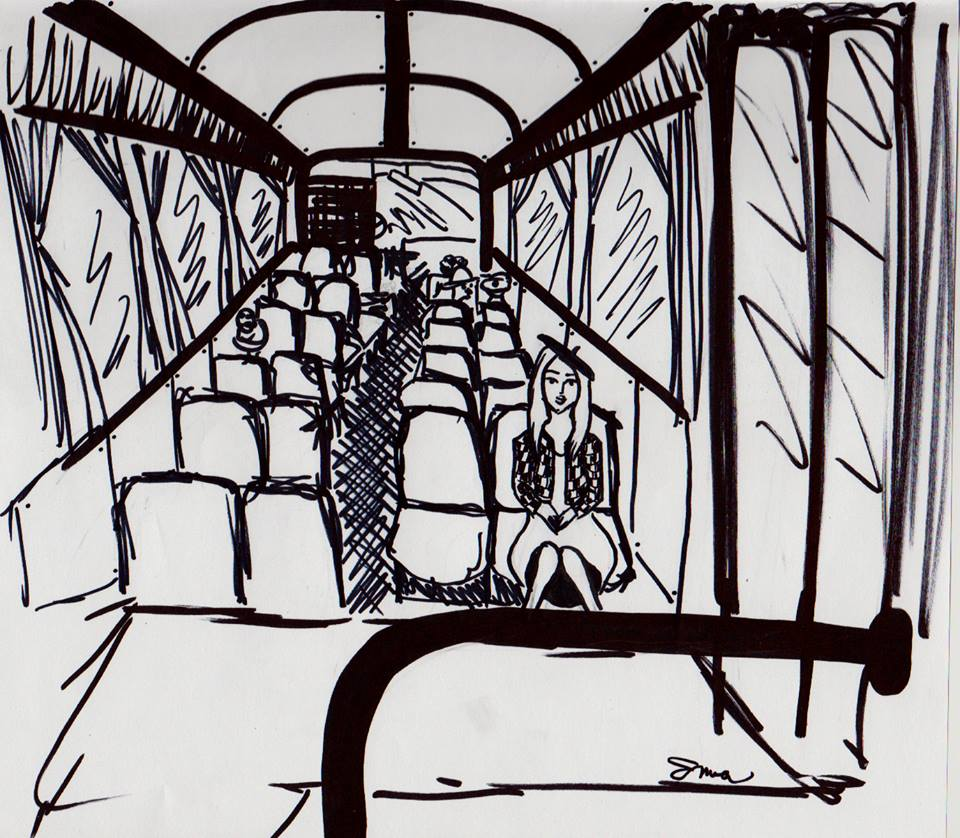

« předchozí článek | obsah čísla | následující článek »
Básník a bezdomovec k sobě nemají zas až tak daleko. Ne, nemyslím toho básníka, co se jmenoval Bezprizorný, myslím spíše ten pocit. Jde čistě o institut trvalého bydliště, ani básník ani bezdomovec ho nemají. Básník žije všude, bezdomovec taky i když ho počasí nutí zalézat pod mosty.
Přes tohle všechno jsem neměl chuť sdílet nádražní čekárnu s bezdomovci. Byl čas, byla zima, peníze nebyly, tak jsem se rozhodl se trochu projet. Čistě jen proto, abych se zahřál – jako bezdomovec. Druhý důvod byla ta vůně dálek – měl jsem tímto způsobem projetu většinu města. Znal jsem město dobře, alespoň natolik dobře, nakolik ho z okýnka autobusu poznat šlo.
Náměstí Pařížské komuny – typické pro náš svět – ulice a náměstí si pojmenováváme po osobnostech a historických událostech, abychom pak nevěděli, kdo nebo co to bylo. Šlapeme po vlastní historii. Ale není to vlastně jedno? Snad ano, pro většinu lidí jsou to jen názvy. Stejně tak pro mě bude Náměstí Pařížské komuny to místo, kde přistoupila TA holka, nehledě na to, co to vlastně Pařížská komuna byla.
A stejné je to s autobusy. Když někoho v knize přejede tramvaj, nedozvíte se obvykle, jaká tramvaj to byla. Autor knihy se obvykle spokojí s tím, že napíše, jakou měla barvu nebo jaké nesla číslo linky. K tomu, aby uvedl výrobce, nebo dokonce typ, se však nemá. Je to jednoduché – spisovatelé obvykle nebývají odborníci na veřejnou dopravu a pak, jak by řekli kritici, je to nepodstatný detail, který není součástí příběhu. Někdy to však součástí příběhu je. Ne každý autobus má totiž sedadla uspořádaná stejně nudně v řadách za sebou.
Ba naopak – konstruktéři moderních autobusů se totiž zřejmě předhánějí v tom, kdo vymyslí originálnější uspořádání sedaček. Vezměte si třeba takový SOR City NB 12 – ten má uprostřed dvě vyvýšené sedačky umístěné mezi dveřmi, otočené koleny do středu autobusu. Naproti těmto vyvýšeným místům je prostor pro kočárky. Za prostorem dveří na vnější straně vyvýšených sedaček se nachází plexisklo a těsně za ním dvě místa k sezení.
Tam sedávám rád. Plexisklo přede mnou mě chrání před povětrnostními vlivy, ale zároveň je přes něj dobře vidět. Seděl jsem tam i ten podvečer.
Autobus klesal od Rajského dvora pomalu, ale jistě k řece.
Hele – ten dům pod pekárnou už dostavěli. A zdá se, že tam dokonce i někdo bydlí. No bylo načase, už tady stál rozestavěný tři zimy.
Na Náměstí Pařížské komuny už čekali cestující na zastávce. Přistoupil jeden dědek, dva kravaťáci a jedna mladá holka. Posadila se naproti mě, také za plexisklo, akorát proti směru jízdy. Dělila nás dvě plexiskla, dva dveřní prostory a ony dvě vyvýšené sedačky, ale viděli jsme na sebe dobře. Autobus vyjel.
Hele, tady taky otevřeli kebab, to se ti Turci nějak rozmnožili. To je asi třetí, o kterým vim.
Oči mi sklouzly zpátky do autobusu a spočinuly na mé spolujezdkyni. Koukala na mě.
Nečum.
Byla docela hezká – podmanivé hnědé oči, slušivý červený baret a kostkovaný kabát. Měla nějaké zvláštní kouzlo, ale jinak vypadala celkem průměrně.
Nečum. Jé, to byla Valérie!
Otočil jsem se z okýnka: V záblesku jsem nahlédl do jakési kavárny, kde seděl u výlohy mladý pár, ale autobus rychle ujel dál. Za oknem se teď míhaly výlohy Křížové ulice.
V tu chvíli mi to došlo – vždyť já žádnou Valérii neznám! Otočil jsem se do autobusu.
Holka sedící naproti mě teď koukala z okýnka.
Jé, tyhle boty si pak musím koupit.
A za oknem projela výloha jakéhosi obchodu s dámskou obuví.
Já asi slyším její myšlenky, projelo mi hlavou a další její myšlenka mi to potvrdila.
Jé! já nechala puštěnou digestoř! Stojí mi to za to se vracet? Snad ani ne...
Další zastávka – Ústřední archiv. Přistoupil vousáč, stoupnul si do prostoru pro kočárky, opřel se o tyč a vytáhnul čtečku. Autobus minul budovu archivu.
Taková hnusná budova, tam bych nechtěla pracovat.
V tomhle jsem s ní byl zajedno. Ústřední archiv je skutečně mimořádně hnusná budova. Architekt byl asi Vogon.
Autobus projel po Železném mostě. Světla města se odrážela v řece a já si opět potvrdil, že byly žárovky vynalezeny proto, aby se mohly odrážet v řece. Řeka tu totiž byla před žárovkami.
Přejeli jsme okolo automatu svět, kde blednoucí prodavačky nabízejí chlebíčky pamětníky. Autobus vjel na druhý břeh – do Podhradí.
Tady bych teda nechtěla bydlet, projelo hlavou mé spolujezdkyni.
Ale Podhradí nebyla zas tak špatná čtvrť. Svou pověst si držela především setrvačností, už zde nebyly tak časté loupeže, dokonce i místní domobrana už ukončila svou činnost a její členové se stali řádnými fotbalovými fanoušky, kteří jedí na utkání párek v rohlíku se svými syny.
Zastávka U Lípy, kde pochopitelně už dávno žádná lípa není. Vousáč přestoupil na tramvaj a jeho místo zaujali školáci. Ke mě si sedl nějaký starý pán.
Příští vystupovat, projelo té holce hlavou.
Líbíš se mi, líbíš se mi, líbíš se mi, začalo mi hrát hlavou jako kolovrátek a mé oči opět spočinuly na mé spolujezdkyni. Hlavou mi šrotovala otázka, zda ji mám oslovit. Holku, které můžu doslova „číst myšlenky“, přece nepotkám každý den.
Ale na druhou stranu zde působila ta síla, která umožňuje, aby se v tak hustě osídlených metropolích člověk cítil mnohdy osaměleji než v kdejakém Vypadákově.
A zatímco autobus míjel továrnu na výrobu klikových hřídelí, rozhodl jsem se: Oslovím ji telepaticky.
Líbíš se mi, líbíš se mi, líbíš se mi, zněl znovu kolovrátek v mé hlavě.
V tu chvílí zdvihla oči, nejprve se tvářila udivěně.
Sluší ti to.
Pak se stydlivě usmála a vstala. Její zastávka se blížila. Ačkoliv měla dveře přímo u sebe, přešla ty dva metry k dveřím mým a podívala se na mě z boku.
Ale do očí bys mi to neřekl? Zněla její myšlenková výzva.
V tu chvíli jako kdyby se protrhla hráz myšlenek v mé hlavě a valila se vlna nápadů s třískami z antických filozofů. Myšlenky se valily jedna přes druhou až nakonec zůstala jen jedna jediná – NE!
V tu chvíli se ta holka rozesmála, až to přišlo ostatním cestujícím poněkud divné, a vystoupila na zastávce na Zatahovací ulici.
Nikdy jsem nebyl telepat, neviděl jsem auru ani duchy. Vždycky jsem byl spíše skeptik, tak jsem se snažil si tuto divnou příhodu nějak vysvětlit. Vysvětlení přišlo, jak to tak v moderní vědě bývá, z úplně jiného oboru – z radiotechniky. Určitě už jste slyšeli o těch dnech, kdy jsou dobré atmosférické podmínky. Kdy v chalupě u Nového Boru naladíte rádio Taškent. Zřejmě to byl jeden z těch dní, akorát se tehdy místo rádia dobře ladily myšlenky.
Nikdy jsem pak už nic podobného nezažil. Zmíněnou holku jsem pak ještě jednou potkal ve vlaku na Východním nádraží, ale tehdy už jsem její myšlenky neslyšel. A možná, že je to tak lepší.
Myšlenky nejsou ke čtení, ke čtení jsou knihy.
Finis